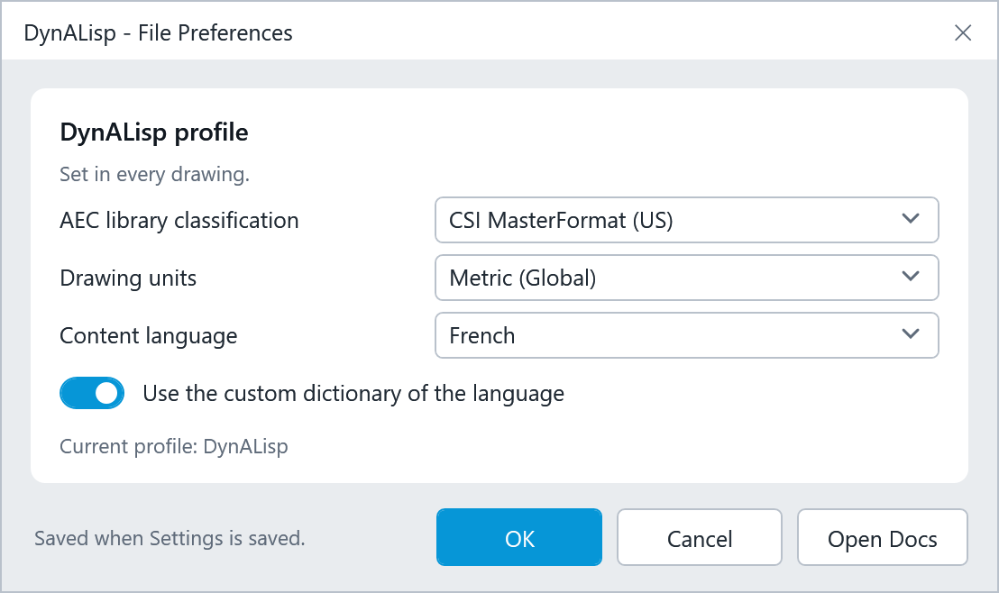

Set File Preferences
| Function Syntax | DYL-SETFILEPREFS |
| Requires | AutoCAD for Windows (ActiveX / Visual LISP); AutoCAD Architecture for the AEC paths |
| Status | New – see Known Limitations |
| Licence | GNU General Public License v3 |
Program Description
Set AutoCAD's paths for the way you work, from three choices: the AEC library classification, the drawing units and the language of the content. The templates, the AutoCAD Architecture content, tool catalogs and detail databases, and the spell checker dictionaries follow. Your other options are kept: DynALisp sets them in a profile of its own.

How To Use
- In Dyl-Settings, check File Preferences (in Overrides) and click its open button.
- Pick the three preferences below, and whether to use the DynALisp custom dictionary of the language (Use the custom dictionary of the language), then save.
- AutoCAD now uses the DynALisp profile (Options > Profiles), made the first time as a copy of your current profile. It stays current for the next sessions.
- Or type Dyl-SetFilePrefs: the same choices on the command line (Enter keeps the current one).
The Preferences
- AEC library classification – NBS CAWS (Global), CSI MasterFormat (US) or OmniClass: the detail components and keynotes of AutoCAD Architecture.
- Drawing units – Metric (Global) or Imperial (US): the templates and the content folders.
- Content language – one of the languages AutoCAD is installed in (English, French, German, Spanish...): the AutoCAD Architecture content and the spell checker. The default is the language of AutoCAD. It is not the language of DynALisp and its docs, chosen apart in the Environment section of Dyl-Settings.
Spelling
- The spell checker uses the main dictionary of the language; AutoCAD has none for Chinese, Hungarian, Japanese, Korean or Polish, which use American English.
- In French, the DynALisp custom dictionary adds about 4,450 architecture and construction words, Roman numerals and the acronyms of Quebec drawings (CNB, RBQ, CSA...). The words you add while checking spelling are kept in your own copy. See Dictionary.
Good To Know
- Each drawing opened checks the profile. When it is no longer current, or the preferences changed, the last line of the startup tells you to run Dyl-SetFilePrefs: a drawing never switches the profile by itself.
- Turn File Preferences off in Dyl-Settings to go back to your former profile; the DynALisp profile is kept.
- Each AutoCAD language (English, French...) has its own profiles: the DynALisp profile is made in each one.
Commands
| Command | Name | Description |
|---|---|---|
| DYL-SETFILEPREFS | Set File Preferences | Prompts for the file preferences and sets the DynALisp profile from them. |
Known Limitations
- AutoCAD Architecture has no OmniClass detail or keynote database, so OmniClass sets none.
- Only the content installed is used: a language or units whose AutoCAD Architecture content is not installed leaves those paths as they are.
- The language of AutoCAD itself does not change: it is chosen when AutoCAD starts.
- While the DynALisp profile is on, switching to another profile by hand gives a reminder in each drawing opened; turn File Preferences off to use another profile.
Command Names And Aliases
Each program has one main command starting with Dyl-. The short names are its aliases: they run the same command, and can be added, renamed or removed in Dyl-Suite (saved in Resources\Aliases.csv).
| Command | Aliases | Name |
|---|---|---|
| Dyl-SetFilePrefs | – | Set File Preferences |